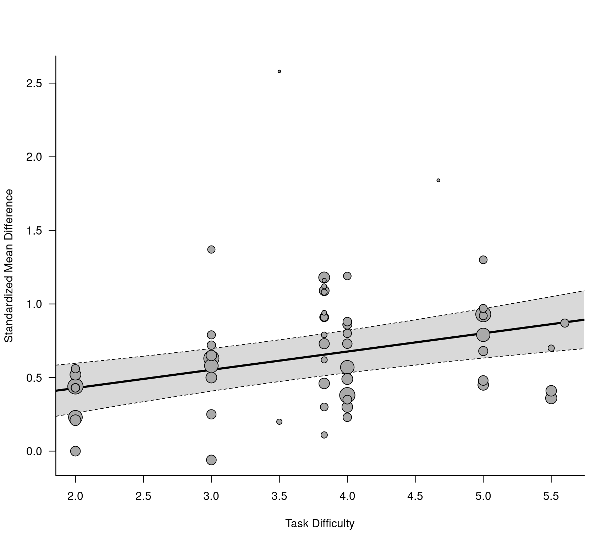

dat.knapp2017.RdResults from 31 studies examining differences in planning performance in schizophrenia patients versus healthy controls.
dat.knapp2017
The data frame contains the following columns:
| author | character | study author(s) |
| year | numeric | publication year |
| study | numeric | study id number |
| task | character | type of task |
| difficulty | numeric | task difficulty |
| group1 | character | identifier for patient group within studies |
| group2 | character | identifier for control group within studies |
| comp | numeric | identifier for comparisons within studies |
| yi | numeric | standardized mean difference for planning performance |
| vi | numeric | corresponding sampling variance |
| n_sz | numeric | number of schizophrenic patients |
| n_hc | numeric | number of healthy controls |
| yi | numeric | standardized mean difference for IQ |
| vi | numeric | corresponding sampling variance |
The studies included in this dataset examined differences between schizophrenia patients and healthy controls with respect to their performance on the tower of London test (https://en.wikipedia.org/wiki/Tower_of_London_test) or a similar cognitive tasks measuring planning ability. The outcome measure for this meta-analysis was the standardized mean difference (with positive values indicating better performance in the healthy controls compared to the schizophrenia patients).
The dataset has a more complex structure for several reasons:
Studies 2, 3, 9, and 20 included more than one schizophrenia patient group and the standardized mean differences were computed by comparing these groups against a single healthy control group.
Studies 6, 12, 14, 15, 18, 19, 22, and 26 had the patients and controls complete different tasks of varying complexity (essentially the average number of moves required to complete a task).
Study 24 provides two standardized mean differences, one for men and the other for women.
Study 29 provides three standardized mean differences, corresponding to the three different COMT Val158Met genotypes (val/val, val/met, and met/met).
All 4 issues described above lead to a multilevel structure in the dataset, with multiple standardized mean differences nested within some of the studies. Issues 1. and 2. also lead to correlated sampling errors.
Knapp, F., Viechtbauer, W., Leonhart, R., Nitschke, K., & Kaller, C. P. (2017). Planning performance in schizophrenia patients: A meta-analysis of the influence of task difficulty and clinical and sociodemographic variables. Psychological Medicine, 47(11), 2002--2016. https://doi.org/10.1017/S0033291717000459
Wolfgang Viechtbauer, wvb@metafor-project.org, https://www.metafor-project.org
### copy data into 'dat' and examine data dat <- dat.knapp2017 dat#> authors year study task difficulty group1 group2 #> 1 Badcock et al. 2005 1 SOC (CANTAB) 3.83 SZ HC #> 2 Braw et al. 2008 2 SOC (CANTAB) 3.83 SZ1 HC #> 3 Braw et al. 2008 2 SOC (CANTAB) 3.83 SZ2 HC #> 4 Braw et al. 2012 3 SOC (CANTAB) 3.83 SZ1 HC #> 5 Braw et al. 2012 3 SOC (CANTAB) 3.83 SZ2 HC #> 6 Braw et al. 2012 3 SOC (CANTAB) 3.83 SZ3 HC #> 7 Braw et al. 2012 3 SOC (CANTAB) 3.83 SZ4 HC #> 8 Bustini et al. 1999 4 TOH NA SZ HC #> 9 Dichter et al. 2006 5 TOL NA SZ HC #> 10 Elliott et al. 1998 6 SOC (CANTAB) 2.00 SZ HC #> 11 Elliott et al. 1998 6 SOC (CANTAB) 3.00 SZ HC #> 12 Elliott et al. 1998 6 SOC (CANTAB) 4.00 SZ HC #> 13 Elliott et al. 1998 6 SOC (CANTAB) 5.00 SZ HC #> 14 Elliott et al. 1998 6 SOC (one-touch) 2.00 SZ HC #> 15 Elliott et al. 1998 6 SOC (one-touch) 3.00 SZ HC #> 16 Elliott et al. 1998 6 SOC (one-touch) 4.00 SZ HC #> 17 Elliott et al. 1998 6 SOC (one-touch) 5.00 SZ HC #> 18 Feldmann et al. 2006 7 SOC 3.50 SZ HC #> 19 Goldberg et al. 1990 8 TOH NA SZ HC #> 20 Greenwood et al. 2011 9 TOL 4.00 SZ1 HC #> 21 Greenwood et al. 2011 9 TOL 4.00 SZ2 HC #> 22 Hilti et al. 2010 10 SOC (CANTAB) 3.83 SZ HC #> 23 Huddy et al. 2007 11 SOC (CANTAB) 3.83 SZ HC #> 24 Joyce et al. 2002 12 SOC (CANTAB) 2.00 SZ HC #> 25 Joyce et al. 2002 12 SOC (CANTAB) 3.00 SZ HC #> 26 Joyce et al. 2002 12 SOC (CANTAB) 4.00 SZ HC #> 27 Joyce et al. 2002 12 SOC (CANTAB) 5.00 SZ HC #> 28 Krabbendam et al. 1999 13 TOL NA SZ HC #> 29 Langdon et al. 2001 14 TOL 2.00 SZ HC #> 30 Langdon et al. 2001 14 TOL 3.00 SZ HC #> 31 Langdon et al. 2001 14 TOL 4.00 SZ HC #> 32 Langdon et al. 2001 14 TOL 5.00 SZ HC #> 33 Langdon et al. 2002 15 TOL 2.00 SZ HC #> 34 Langdon et al. 2002 15 TOL 3.00 SZ HC #> 35 Langdon et al. 2002 15 TOL 4.00 SZ HC #> 36 Langdon et al. 2002 15 TOL 5.00 SZ HC #> 37 Marczewski et al. 2001 16 TOL 4.67 SZ HC #> 38 Morice et al. 1996 17 TOL 3.50 SZ HC #> 39 Morris et al. 1995 18 TOL 3.00 SZ HC #> 40 Morris et al. 1995 18 TOL 4.00 SZ HC #> 41 Morris et al. 1995 18 TOL 5.00 SZ HC #> 42 Pantelis et al. 1997 19 SOC (CANTAB) 2.00 SZ HC #> 43 Pantelis et al. 1997 19 SOC (CANTAB) 3.00 SZ HC #> 44 Pantelis et al. 1997 19 SOC (CANTAB) 4.00 SZ HC #> 45 Pantelis et al. 1997 19 SOC (CANTAB) 5.00 SZ HC #> 46 Tenjin et al. 2012 20 BACS-J NA SZ1 HC #> 47 Tenjin et al. 2012 20 BACS-J NA SZ2 HC #> 48 Tyson et al. 2004 21 SOC (CANTAB) 3.83 SZ HC #> 49 Zhu et al. 2010 22 TOL 2.00 SZ HC #> 50 Zhu et al. 2010 22 TOL 3.00 SZ HC #> 51 Zhu et al. 2010 22 TOL 4.00 SZ HC #> 52 Andersen 2013 23 SOC 3.83 SZ HC #> 53 Ayesa-Arriola et al. 2013 24 TOL-Drexel 5.50 SZ1 HC1 #> 54 Ayesa-Arriola et al. 2013 24 TOL-Drexel 5.50 SZ2 HC2 #> 55 Fagerlund 2004 25 SOC 3.83 SZ HC #> 56 Kontis et al. 2013 26 SOC 2.00 SZ HC #> 57 Kontis et al. 2013 26 SOC 3.00 SZ HC #> 58 Kontis et al. 2013 26 SOC 4.00 SZ HC #> 59 Kontis et al. 2013 26 SOC 5.00 SZ HC #> 60 Okruszek et al. 2013 27 TOL-Drexel 5.50 SZ HC #> 61 Saleem et al. 2013 28 SOC 3.83 SZ HC #> 62 Tsuchimine et al. 2013 29 BACS-J NA SZ1 HC1 #> 63 Tsuchimine et al. 2013 29 BACS-J NA SZ2 HC2 #> 64 Tsuchimine et al. 2013 29 BACS-J NA SZ3 HC3 #> 65 Asevedo et al. 2013 30 TOL 3.83 SZ HC #> 66 Shum et al. 2004 31 TOL (four-disk) 5.60 SZ HC #> comp yi vi n_sz n_hc yi_iq vi_iq #> 1 1 0.62 0.075 24 33 0.72 0.076 #> 2 1 0.46 0.047 44 44 NA NA #> 3 2 0.73 0.052 38 44 NA NA #> 4 1 1.18 0.062 39 37 NA NA #> 5 2 1.09 0.073 27 37 NA NA #> 6 3 0.91 0.102 15 37 NA NA #> 7 4 0.91 0.084 20 37 NA NA #> 8 1 0.57 0.074 28 28 NA NA #> 9 1 0.40 0.180 13 10 NA NA #> 10 1 0.43 0.170 12 12 0.12 0.167 #> 11 2 1.37 0.206 12 12 0.12 0.167 #> 12 3 0.23 0.168 12 12 0.12 0.167 #> 13 4 0.97 0.186 12 12 0.12 0.167 #> 14 5 0.56 0.173 12 12 0.12 0.167 #> 15 6 0.79 0.180 12 12 0.12 0.167 #> 16 7 1.19 0.196 12 12 0.12 0.167 #> 17 8 0.92 0.184 12 12 0.12 0.167 #> 18 1 0.20 0.096 22 20 0.62 0.100 #> 19 1 1.42 0.180 13 15 NA NA #> 20 1 0.35 0.074 27 28 1.21 0.086 #> 21 2 0.88 0.078 28 28 1.26 0.086 #> 22 1 1.08 0.079 26 33 0.76 0.074 #> 23 1 0.94 0.111 20 20 0.42 0.102 #> 24 1 0.44 0.020 135 81 0.49 0.020 #> 25 2 0.63 0.021 135 81 0.49 0.020 #> 26 3 0.38 0.020 135 81 0.49 0.020 #> 27 4 0.93 0.022 135 81 0.49 0.020 #> 28 1 0.33 0.102 24 17 NA NA #> 29 1 0.00 0.073 32 24 NA NA #> 30 2 -0.06 0.073 32 24 NA NA #> 31 3 0.73 0.078 32 24 NA NA #> 32 4 0.48 0.075 32 24 NA NA #> 33 1 0.43 0.092 25 20 NA NA #> 34 2 0.72 0.096 25 20 NA NA #> 35 3 0.80 0.097 25 20 NA NA #> 36 4 1.30 0.109 25 20 NA NA #> 37 1 1.84 0.190 15 15 NA NA #> 38 1 2.58 0.216 17 17 0.58 0.123 #> 39 1 0.25 0.071 30 27 0.18 0.071 #> 40 2 0.86 0.077 30 27 0.18 0.071 #> 41 3 0.68 0.074 30 27 0.18 0.071 #> 42 1 0.21 0.060 36 31 0.48 0.062 #> 43 2 0.65 0.063 36 31 0.48 0.062 #> 44 3 0.30 0.061 36 31 0.48 0.062 #> 45 4 0.45 0.062 36 31 0.48 0.062 #> 46 1 1.03 0.054 20 340 NA NA #> 47 2 0.92 0.104 10 340 NA NA #> 48 1 1.12 0.108 28 17 NA NA #> 49 1 0.52 0.052 40 40 NA NA #> 50 2 0.50 0.052 40 40 NA NA #> 51 3 0.49 0.051 40 40 NA NA #> 52 1 0.30 0.042 48 48 NA NA #> 53 1 0.36 0.022 86 97 0.47 0.023 #> 54 2 0.41 0.030 75 62 0.10 0.030 #> 55 1 0.79 0.086 25 25 NA NA #> 56 1 0.23 0.031 77 55 NA NA #> 57 2 0.58 0.032 77 55 NA NA #> 58 3 0.57 0.032 77 55 NA NA #> 59 4 0.79 0.034 77 55 NA NA #> 60 1 0.70 0.071 30 30 NA NA #> 61 1 1.16 0.136 20 15 0.23 0.117 #> 62 1 1.29 0.039 56 68 0.37 0.033 #> 63 2 0.63 0.039 47 62 0.43 0.038 #> 64 3 0.31 0.121 15 19 1.00 0.134 #> 65 1 0.11 0.070 30 27 NA NA #> 66 1 0.87 0.036 60 60 NA NA# \dontrun{ ### load metafor package require(metafor) ### fit a standard random-effects model ignoring the issues described above res <- rma(yi, vi, data=dat) res#> #> Random-Effects Model (k = 66; tau^2 estimator: REML) #> #> tau^2 (estimated amount of total heterogeneity): 0.0551 (SE = 0.0212) #> tau (square root of estimated tau^2 value): 0.2348 #> I^2 (total heterogeneity / total variability): 47.74% #> H^2 (total variability / sampling variability): 1.91 #> #> Test for Heterogeneity: #> Q(df = 65) = 129.0088, p-val < .0001 #> #> Model Results: #> #> estimate se zval pval ci.lb ci.ub #> 0.6557 0.0439 14.9521 <.0001 0.5698 0.7417 *** #> #> --- #> Signif. codes: 0 ‘***’ 0.001 ‘**’ 0.01 ‘*’ 0.05 ‘.’ 0.1 ‘ ’ 1 #>### fit a multilevel model with random effects for studies and comparisons within studies ### (but this ignored the correlation in the sampling errors) res <- rma.mv(yi, vi, random = ~ 1 | study/comp, data=dat) res#> #> Multivariate Meta-Analysis Model (k = 66; method: REML) #> #> Variance Components: #> #> estim sqrt nlvls fixed factor #> sigma^2.1 0.0383 0.1958 31 no study #> sigma^2.2 0.0263 0.1621 66 no study/comp #> #> Test for Heterogeneity: #> Q(df = 65) = 129.0088, p-val < .0001 #> #> Model Results: #> #> estimate se zval pval ci.lb ci.ub #> 0.6801 0.0560 12.1513 <.0001 0.5704 0.7898 *** #> #> --- #> Signif. codes: 0 ‘***’ 0.001 ‘**’ 0.01 ‘*’ 0.05 ‘.’ 0.1 ‘ ’ 1 #>### create variable that indicates the task and difficulty combination as increasing integers dat$task.diff <- unlist(lapply(split(dat, dat$study), function(x) { task.int <- as.integer(factor(x$task)) diff.int <- as.integer(factor(x$difficulty)) diff.int[is.na(diff.int)] <- 1 paste0(task.int, ".", diff.int)})) ### construct correlation matrix for two tasks with four different difficulties where the ### correlation is 0.4 for different difficulties of the same task, 0.7 for the same ### difficulty of different tasks, and 0.28 for different difficulties of different tasks R <- matrix(0.4, nrow=8, ncol=8) R[5:8,1:4] <- R[1:4,5:8] <- 0.28 diag(R[1:4,5:8]) <- 0.7 diag(R[5:8,1:4]) <- 0.7 diag(R) <- 1 rownames(R) <- colnames(R) <- paste0(rep(1:2, each=4), ".", 1:4) R#> 1.1 1.2 1.3 1.4 2.1 2.2 2.3 2.4 #> 1.1 1.00 0.40 0.40 0.40 0.70 0.28 0.28 0.28 #> 1.2 0.40 1.00 0.40 0.40 0.28 0.70 0.28 0.28 #> 1.3 0.40 0.40 1.00 0.40 0.28 0.28 0.70 0.28 #> 1.4 0.40 0.40 0.40 1.00 0.28 0.28 0.28 0.70 #> 2.1 0.70 0.28 0.28 0.28 1.00 0.40 0.40 0.40 #> 2.2 0.28 0.70 0.28 0.28 0.40 1.00 0.40 0.40 #> 2.3 0.28 0.28 0.70 0.28 0.40 0.40 1.00 0.40 #> 2.4 0.28 0.28 0.28 0.70 0.40 0.40 0.40 1.00### construct an approximate V matrix accounting for the use of shared groups and ### for correlations among tasks/difficulties as specified in the R matrix above V <- vcalc(vi, cluster=study, grp1=group1, grp2=group2, w1=n_sz, w2=n_hc, obs=task.diff, rho=R, data=dat) ### correlation matrix for study 3 with four patient groups and a single control group cov2cor(V[dat$study == 3, dat$study == 3])#> [,1] [,2] [,3] [,4] #> [1,] 1.0000000 0.4652832 0.3847419 0.4243294 #> [2,] 0.4652832 1.0000000 0.3488477 0.3847419 #> [3,] 0.3847419 0.3488477 1.0000000 0.3181424 #> [4,] 0.4243294 0.3847419 0.3181424 1.0000000### correlation matrix for study 6 with two tasks with four difficulties cov2cor(V[dat$study == 6, dat$study == 6])#> [,1] [,2] [,3] [,4] [,5] [,6] [,7] [,8] #> [1,] 1.00 0.40 0.40 0.40 0.70 0.28 0.28 0.28 #> [2,] 0.40 1.00 0.40 0.40 0.28 0.70 0.28 0.28 #> [3,] 0.40 0.40 1.00 0.40 0.28 0.28 0.70 0.28 #> [4,] 0.40 0.40 0.40 1.00 0.28 0.28 0.28 0.70 #> [5,] 0.70 0.28 0.28 0.28 1.00 0.40 0.40 0.40 #> [6,] 0.28 0.70 0.28 0.28 0.40 1.00 0.40 0.40 #> [7,] 0.28 0.28 0.70 0.28 0.40 0.40 1.00 0.40 #> [8,] 0.28 0.28 0.28 0.70 0.40 0.40 0.40 1.00### correlation matrix for study 24 with two independent groups cov2cor(V[dat$study == 24, dat$study == 24])#> [,1] [,2] #> [1,] 1 0 #> [2,] 0 1### correlation matrix for study 29 with three independent groups cov2cor(V[dat$study == 29, dat$study == 29])#> [,1] [,2] [,3] #> [1,] 1 0 0 #> [2,] 0 1 0 #> [3,] 0 0 1### fit multilevel model as above, but now use this V matrix in the model res <- rma.mv(yi, V, random = ~ 1 | study/comp, data=dat) res#> #> Multivariate Meta-Analysis Model (k = 66; method: REML) #> #> Variance Components: #> #> estim sqrt nlvls fixed factor #> sigma^2.1 0.0102 0.1009 31 no study #> sigma^2.2 0.0557 0.2360 66 no study/comp #> #> Test for Heterogeneity: #> Q(df = 65) = 152.4935, p-val < .0001 #> #> Model Results: #> #> estimate se zval pval ci.lb ci.ub #> 0.6696 0.0546 12.2735 <.0001 0.5626 0.7765 *** #> #> --- #> Signif. codes: 0 ‘***’ 0.001 ‘**’ 0.01 ‘*’ 0.05 ‘.’ 0.1 ‘ ’ 1 #>#> #> pred se ci.lb ci.ub pi.lb pi.ub #> 0.67 0.05 0.56 0.78 0.16 1.18 #>#> #> Number of outcomes: 66 #> Number of clusters: 31 #> Outcomes per cluster: 1-8 (mean: 2.13, median: 1) #> #> Model Results: #> #> estimate se tval df pval ci.lb ci.ub #> 0.6696 0.0543 12.3418 30 <.0001 0.5588 0.7804 *** #> #> --- #> Signif. codes: 0 ‘***’ 0.001 ‘**’ 0.01 ‘*’ 0.05 ‘.’ 0.1 ‘ ’ 1 #>### illustrate use of the clubSandwich package together with metafor if (require(clubSandwich)) { coef_test(res, vcov="CR2", cluster=dat$study) conf_int(res, vcov="CR2", cluster=dat$study) }#>#> #> #>#> Coef Estimate SE d.f. Lower 95% CI Upper 95% CI #> 1 intrcpt 0.67 0.0543 22.3 0.557 0.782### examine if task difficulty is a potential moderator of the effect res <- rma.mv(yi, V, mods = ~ difficulty, random = ~ 1 | study/comp, data=dat)#> Warning: Rows with NAs omitted from model fitting.res#> #> Multivariate Meta-Analysis Model (k = 57; method: REML) #> #> Variance Components: #> #> estim sqrt nlvls fixed factor #> sigma^2.1 0.0465 0.2156 25 no study #> sigma^2.2 0.0275 0.1659 57 no study/comp #> #> Test for Residual Heterogeneity: #> QE(df = 55) = 115.9211, p-val < .0001 #> #> Test of Moderators (coefficient 2): #> QM(df = 1) = 10.0201, p-val = 0.0015 #> #> Model Results: #> #> estimate se zval pval ci.lb ci.ub #> intrcpt 0.1803 0.1682 1.0717 0.2838 -0.1494 0.5100 #> difficulty 0.1241 0.0392 3.1655 0.0015 0.0472 0.2009 ** #> #> --- #> Signif. codes: 0 ‘***’ 0.001 ‘**’ 0.01 ‘*’ 0.05 ‘.’ 0.1 ‘ ’ 1 #>#> #> Number of outcomes: 57 #> Number of clusters: 25 #> Outcomes per cluster: 1-8 (mean: 2.28, median: 1) #> #> Test of Moderators (coefficient 2): #> F(df1 = 1, df2 = 23) = 17.7635, p-val = 0.0003 #> #> Model Results: #> #> estimate se tval df pval ci.lb ci.ub #> intrcpt 0.1803 0.1239 1.4547 23 0.1593 -0.0761 0.4367 #> difficulty 0.1241 0.0294 4.2147 23 0.0003 0.0632 0.1850 *** #> #> --- #> Signif. codes: 0 ‘***’ 0.001 ‘**’ 0.01 ‘*’ 0.05 ‘.’ 0.1 ‘ ’ 1 #>#> Coef. Estimate SE t-stat d.f. p-val (Satt) Sig. #> 1 intrcpt 0.180 0.1244 1.45 7.77 0.1862 #> 2 difficulty 0.124 0.0299 4.15 7.39 0.0038 **### draw bubble plot regplot(sav, xlab="Task Difficulty", ylab="Standardized Mean Difference", las=1, digits=1, bty="l")# }